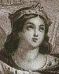

главная  персоналии
персоналии  Элеонора Аквитанская
Элеонора Аквитанская
главная |

Личность в историикраткая энциклопедияПроект «Личность в истории» посвящен людям — современникам грандиозных исторических событий, носителям редких качеств или людям, взгляды которых опередили их время. |
|||||
Коротко |
Статьи |
Персоналии |
Литература |
||
Элеонора Аквитанская |
|||||
За предоставленные материалы авторы проекта благодарят Анастасию Баженову. Васильев А. Е. |
 Элеонора Аквитанская. Средневековая гравюра (фрагмент). |
||||
Биографическая справкаЭлеонора (или Алиенора) Аквитанская (ок. 1122 — 31 марта 1204). Дочь аквитанского герцога Гильома X, внучка Гильома IX Аквитанского, прославившегося в качестве трубадура. Элеонора уже в молодости отличалась красотой и утонченностью манер. Она рано сформировалась как личность и столь же рано вышла замуж — в 1137 году Элеонора сочеталась браком с французского королем Людовиком VII, став таким образом королевой Франции. Излишне вольный образ жизни Элеоноры, привел к тому, что в 1152 году брак был расторгнут, несмотря на то, что у царственных супругов было несколько детей. Элеонора впрочем, быстро утешилась и в том же 1152 году повторно вышла замуж, на этот раз за Генриха Анжуйского, который, спустя 2 года — 1154 г., стал королем Англии, а его супруга Элеонора таким образом — английской королевой. Одним из их детей был знаменитый позднее король Ричард Львиное Сердце. Непрерывно участвуя в дворцовых интригах, в том числе, и направленных против собственного мужа, Элеонора даже провела некоторое время в заточении. Умерла она в 1204 году в весьма преклонном для средневековья возрасте. Цитаты«Репутацию Людовика серьёзно подорвала его жена Алиенора, которая принесла королю Аквитанию в качестве приданого, а затем бросила супруга и забрала это герцогство обратно.» Дюби Ж. История Франции. Средние века. «Ходили слухи — и многие им верили — что в Святой Земле Алиенору соблазнил и овладел ею её собственный дядя Антиохийский. Мы никогда не узнаем, насколько это верно.» Дюби Ж. История Франции. Средние века. «…нравы на юге Франции настолько отличались от северофранцузских, что Алиеноре было не по себе в супружеском доме, в окружении суровых священников, постоянно возмущавшихся её образом жизни.» Дюби Ж. История Франции. Средние века. «Предположим, что Людовик не расстался бы со своей супругой. Бесспорно, что возможности управления на дальних расстояниях были в ту эпоху довольно ограниченными, а обычаи наследования - весьма строгими. Поэтому тогда никому не могла бы прийти мысль о присоединении Аквитании к королевскому домену. К тому же при наследовании она отошла бы одному из королевских отпрысков, а поскольку имелись только дочери, - к одному из зятьёв. И ничто не позволяет думать, что он оказался бы более преданным короне, чем Генрих Плантагенет. Этот претендент на руку Алиеноры был удачливее всех прочих из тех, кто пытался перехватить разведённую женщину. Когда Генриху удалось жениться на ней, он принёс, наконец, как и его отец, оммаж Капетингам за Нормандию, от чего до этого долго отказывался. И наконец, расторжение брака позволило Людовику взять себе жену из дома графов Шампани, соперничавших с Анжуйской династией. Был заключён союз, суливший неисчислимые выгоды королевскому дому Франции. » Дюби Ж. История Франции. Средние века. Список литературы
|
|||||
|